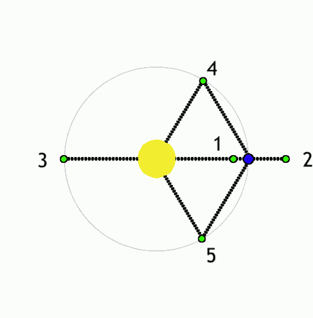

L2 Orbit
L2 is the short way of saying the second Lagrangian point, which is a fancy name for a position in space that allows for perfect balance between the gravitational pull of the Sun and Earth. This means that any object placed at such a location will stay perfectly still relative to the Earth and Sun. There are actually 5 Lagrange points, which are shown on the gif below. L2 is labelled with a 2.

Why do you think we prefer L2 over the rest?
Answer: Let's look at our other options, 5, 4 and 3 are all pretty far away, so those are going to be more difficult to reach. That leaves us with 1 and 2. Imagine you are sitting at point 1, if you point your telescope toward the center of the orbit, you'll be facing the sun. It'll be pretty hard to see anything with that in the way! If you point your telescope away from the center, then you are facing the Earth, and that will block your view too! So that leaves us with 2. Facing your telescope away from the sun, you have a completely free field of view, without having to travel too far. Neat - we think so!
Back